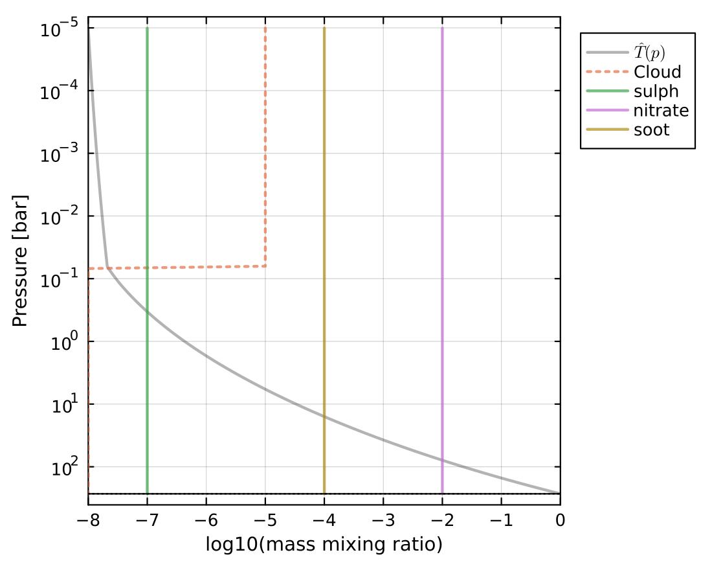

Aerosol radiative properties, CLI
AGNI incorporates the radiative effects of aerosols and clouds in the atmosphere. The model supports arbitrary aerosol types, based on Mie theory. Pre-computed aerosol types include soot, ash, sulfate, and nitrate particles.
In the example below, an atmosphere is configured with three aerosol species at different concentrations. The configuration file is located at res/config/physics/aerosols.toml
Run this script in the usual manner:
./agni.jl res/config/physics/aerosols.tomlThe plot below shows the enforced mixing ratio profiles of the aerosols. Water is plotted with a dotted line because its radiative effects are disabled in this example.

Aerosols modify both shortwave and longwave radiative transfer. The flux profiles below show how aerosols alter the vertical distribution of radiative heating and cooling. Importantly, the shortwave stellar radiation is largely reflected and attenuated at low pressures.

The emission spectrum highlights the fingerprint of the aerosols. The plot shows a distinct shortwave contribution (blue line) due to back-scattering from the aerosols specifically, with some identifiable features.